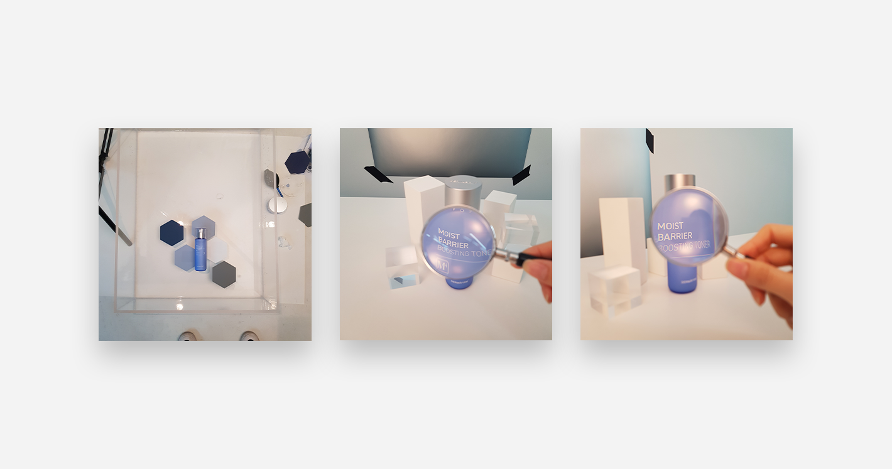

보습장벽 라인
모이스트 베리어 라인
| 작업설명 | 모이스트 베리어 라인 제품은 단순히 보습의 기능을 강조하기보다는 피부장벽도 함께 튼튼하게 관리해줄 수 있다는 컨셉으로 개발됨. 이에 맞춰 보습장벽을 시각적으로 표현할 수 있도록 비주얼 기획을 잡고 문안 및 디자인 진행 |
| 작업기간 | 2021 |
| 작업과정 | 제품기술서 수취 > 문안 작성 > 비주얼 컨셉 기획 > 촬영 > 상세페이지 디자인 > 자사QC 검수 > 홈페이지 업로드 |
| 기여도 | 기획 100% 문안 100% 촬영 50% 디자인 100% |
DETAIL PAGE
PLAN

01. 컨셉회의
촉촉한 수분라인의 제품임을 알릴 뿐만 아니라 민감한 피부의 피부장벽까지 케어해주는 제품임을 보여줄 수 있도록 맑고 깨끗한 무드로 기획. 무드를 더 보여주는 소품 기획도 함께 진행.

02. 촬영
컨셉회의를 토대로 제품 및 소품의 배치, 촬영 구도를 설정하고 포토그래퍼와의 논의 하에 조명, 각도 등을 결정하여 촬영 진행.
03. 촬영컷 편집
촬영컷의 기본 보정이 끝난 후, 컨셉에 따라 디자인적인 편집이 필요한 컷들을 제작.
아래 버튼을 클릭하시면 위로 올라가서 다른 이미지를 보실 수 있습니다
GO
TO TOP
X
<